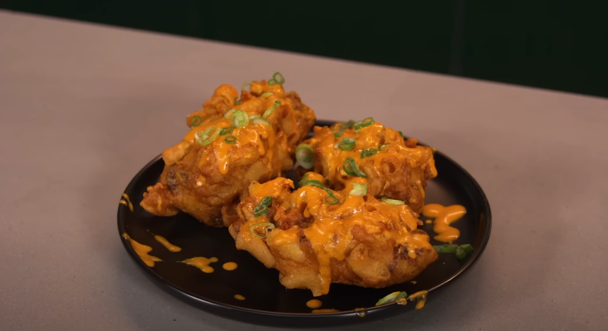

Mac and Cheese Wings

Description
Mac and Cheese Wings are a unique and indulgent twist on classic chicken wings. This recipe combines the creamy comfort of mac and cheese with the irresistible crispy texture of chicken wings, resulting in a delightful combination of flavors and textures that will leave you craving more.
Ingredients
- 1 ¼ cup flour
- ¼ cup cheddar powder
- 2 ½ teaspoons baking powder
- 2 tbsp sugar
- ½ teaspoon salt
- ½ teaspoon black pepper
- ½ cup buttermilk
- ¾ cup whole milk
- 1 whole egg
- ½ cup shredded extra sharp cheddar cheese
- 3 tbsp melted butter
- ½ teaspoon salt
- 1 teaspoon garlic powder
- 1 tsp paprika
- 10-15 party wings
- 3 cups large macaroni noodles, precooked and drained
- 1 cup buffalo sauce
- 1 dash worcestershire sauce
- ¼ cup grated parmesan cheese
- 1 tsp cheddar powder
- 3 green onions
Steps
- Whisk together all the dry ingredients.
- Whisk together all the wet ingredients. Mix the wet and dry mixtures.
- Toss the wings into the spice mixture.
- Dip into pancake batter.
- Quickly dip into a sheet pan full of macaroni noodles.
- Deep fry until golden brown.
- Finish in the oven until the chicken is fully cooked.
- Combine the buffalo sauce, butter, and heavy cream in a small sauce pot.
- Toss in the cheddar cheese, parmesan, cheddar powder and stir.
- Squeeze onto wings. Top with sliced green onions.
- ENJOY!